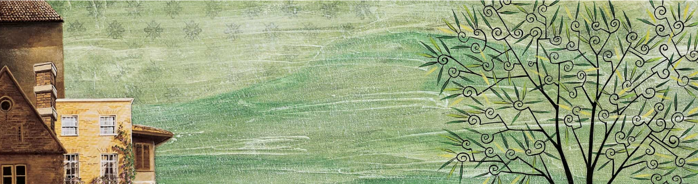

Pequenos Segredos do Ateliê
Onde nascem os nomes?
Muitos nomes de personagens, como 'Tom' ou 'Sebastião', são escolhidos por sua simplicidade e força, refletindo a essência da criança. André Neves busca nomes que soem como um chamado, quase um apelido carinhoso que um avô daria a seu neto, criando uma conexão imediata e afetuosa com o leitor.
A Trilha Sonora do Artista
Enquanto cria, André Neves quase sempre está ouvindo música. Ele conta que as canções ajudam a dar o "tom" emocional da ilustração. Para cenas mais introspectivas, ele pode ouvir músicas clássicas ou instrumentais. Para momentos de alegria e festa, a música popular brasileira, especialmente a nordestina, embala seus traços e recortes.
O Medo de errar
Ao contrário do que muitos pensam, a colagem não permite muitos erros. Uma vez que um papel raro ou um tecido específico é cortado e colado, é quase impossível voltar atrás. Ele diz que cada corte é um ato de coragem, e que o "medo de errar" o mantém focado e presente em cada etapa do processo criativo.
← Voltar para a página inicial